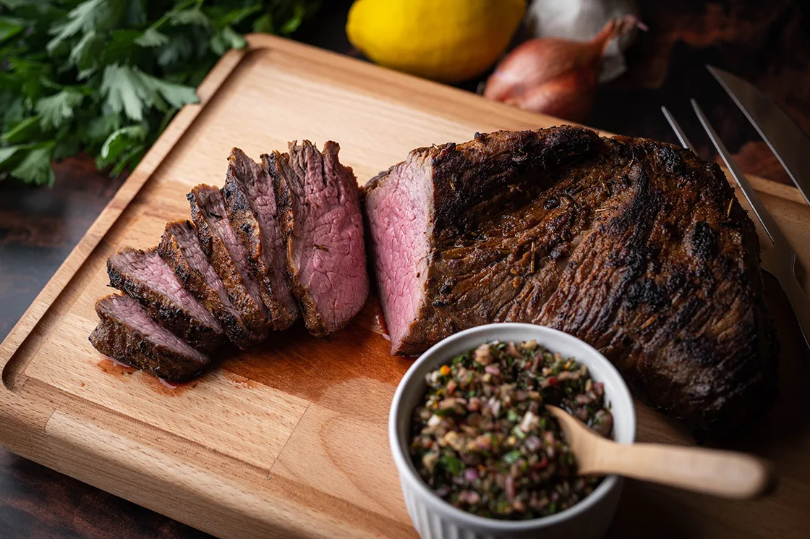
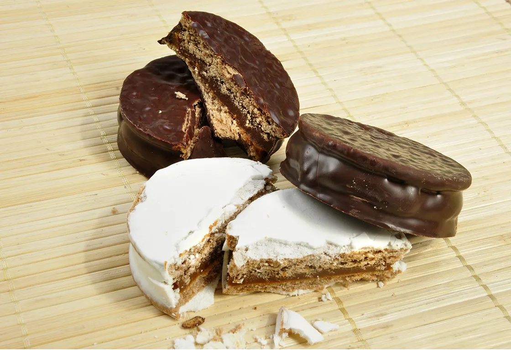
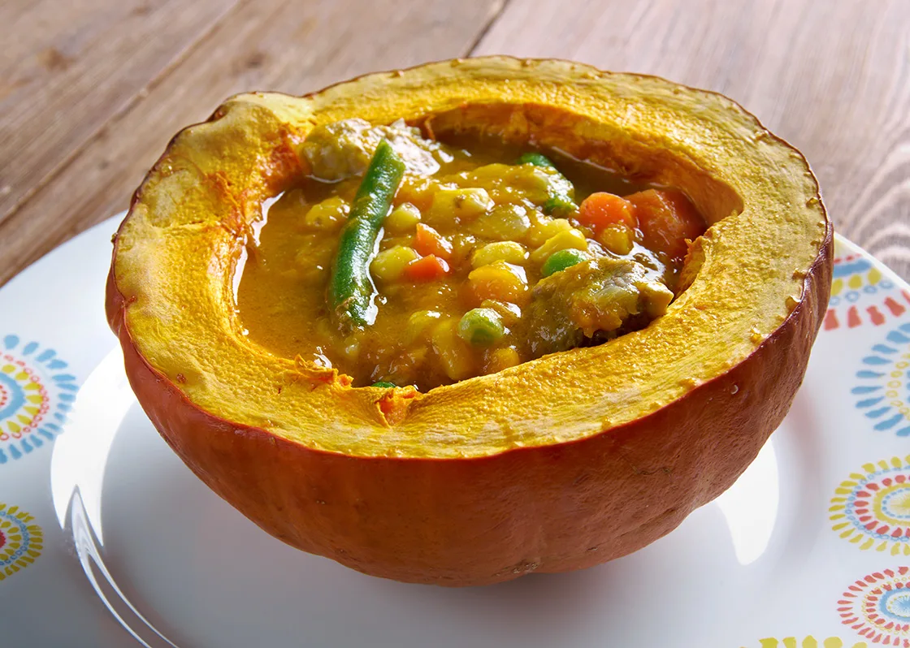
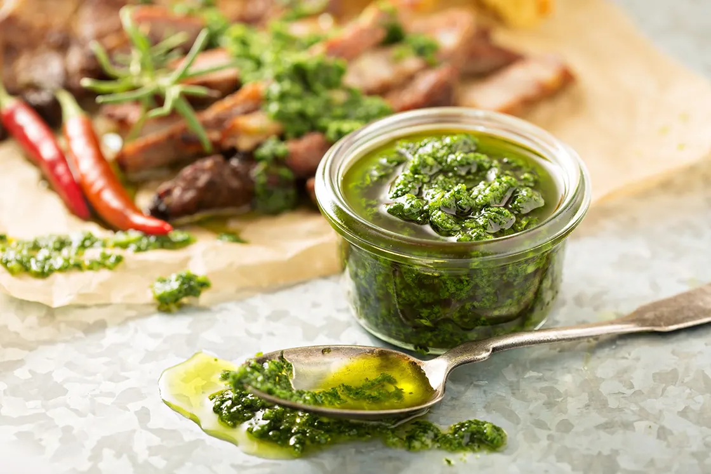
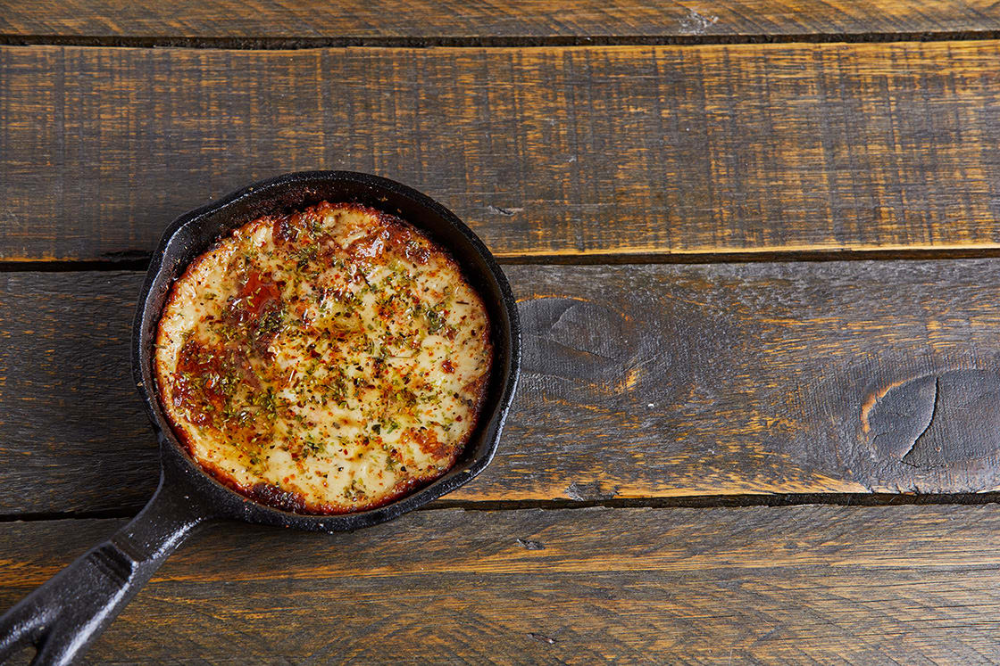

Dishes you should try!
ASADO
Don’t leave Argentina without spending a leisurely afternoon beside the warmth of a grill or open fire, feasting on copious grilled meats. Asado is both a gathering around a barbecue with friends and a method of grilling; a multi-step affair that often lasts several hours. Expect to find beef, pork, ribs, sausages, blood sausages, and sweetbreads hot off the fire. This is Argentina’s traditional food. In Patagonia, look out for a whole lamb or pig roasting over an open flame.
ALFAJORES
Alfajores are crumbly shortbread-like sandwich cookies filled with jam, mousse, or dulce de leche. They are considered something of a national treasure in Argentina despite having originated in the Arab world, brought to southern Spain by the Moors, and later carried by the Spanish to Argentina.
CARBONADA
The carbonada is another famous Argentine food. This is a stew made from lots of vegetables, including potatoes and sweet potatoes, sweetcorn, carrots, peppers, as well as bacon or other meat, topped with fruits ranging from dried apricots and raisins to peaches, pears, and green grapes. It is hearty and appetizing and is usually served in a pumpkin that has been hollowed out and baked. This pumpkin not only serves as a bowl but diners can scrape the inside to enrich the stew.
CHIMICHURRI
Chimichurri is an herbaceous green salsa made of finely chopped parsley, oregano, onion, garlic, chili pepper flakes, olive oil, and a touch of lemon or vinegar, which is classically paired with grilled meats, especially beef, or used as a marinade.
CHORIPAN
Choripán is the ultimate in Argentine street food, sold at street stands throughout Latin America. It is a sandwich consisting of pork and beef chorizo sausage and a variety of condiments served in a crusty bun. It is usually consumed on the go. Depending on the province, caramelized onions, pickled eggplants, green peppers, and a host of other condiments are also added.
HUMITA EN CHALA

Humita is the ultimate celebration of corn. Made of creamed corn, onion, spices, and goat cheese, wrapped in corn husks (chala), and then steamed or boiled, humita serves both as a savory snack and a main dish.
NOQUIS DEL 29

Widespread across Argentina, on the 29th day of each and every month, families and friends get together to eat gnocchi either, whether that be at home or in restaurants as it’s quite common to find ñoquis on menus on this day.
PIZZA AND FAINA

Argentinians love pizza, which they make with a thick crust, light sauce, and loads of cheese, dripping down the side of each slice. Toppings include green olives, oregano, and dried chili flakes. If you want to eat your pizza like a local, you should order a slice of fainâ to go with it. Fainâ is a crunchy, thin flatbread and it’s made from chickpea flour. Served in slices, it is placed atop the pizza to form a crunchy top layer, which serves to absorb the fat drippings from the extra cheese.
PROVOLETA
Grilled provoleta cheese is popular before a meal or as a side to barbecued meats. The semi-hard provolone is the perfect cheese for the grill because it’s compact and firm. For asado, it is sliced about an inch thick, seasoned with a generous amount of oregano, maybe a light sprinkling of dried red chili flakes, and grilled until it just starts to melt in the center. It is typically enjoyed topped with chimichurri sauce and served with crusty bread.